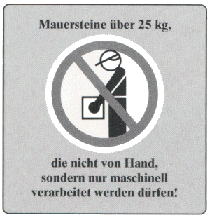

5.4.1 Steinpakete sollten verwendungsgerecht mit in Gebrauchslage gestapelten Steinen angeliefert werden, damit die Mauersteine ohne zusätzliches Bewegen von Hand verarbeitet werden können.
5.4.2 Das Zerteilen und Umstapeln von Steinpaketen mit der Hand ist zu vermeiden. Dies setzt unter anderem voraus, daß die angelieferten Steinpakete in ihrer Grundfläche solche Abmessungen haben, daß zu ihrem Transport nur noch ein zu diesen Abmessungen passender Steinkorb erforderlich ist.
5.4.3 Steinpakete, bei denen das Verarbeitungsgewicht der einzelnen Steine mehr als 25 kg beträgt, sollten durch einen textlichen Hinweis und ein Verbotszeichen auf der Verpackung oder dem Beipackzettel so gekennzeichnet sein, daß diese Steine nicht von Hand vermauert werden dürfen (siehe Bild 16).
